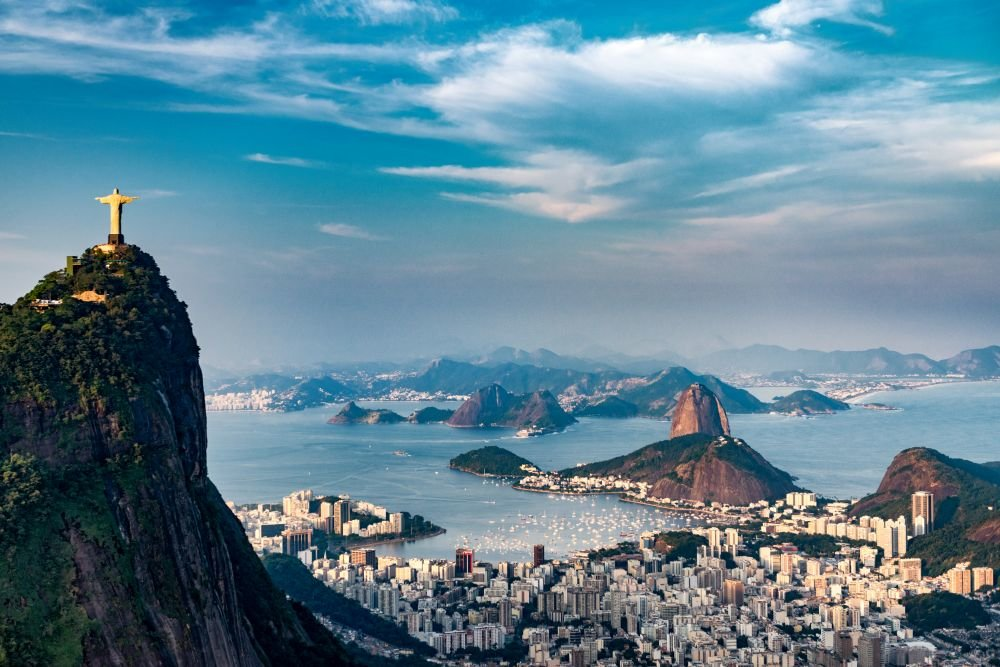
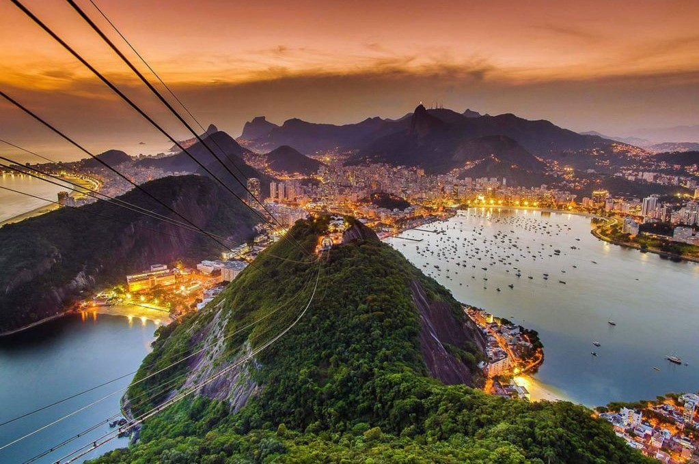
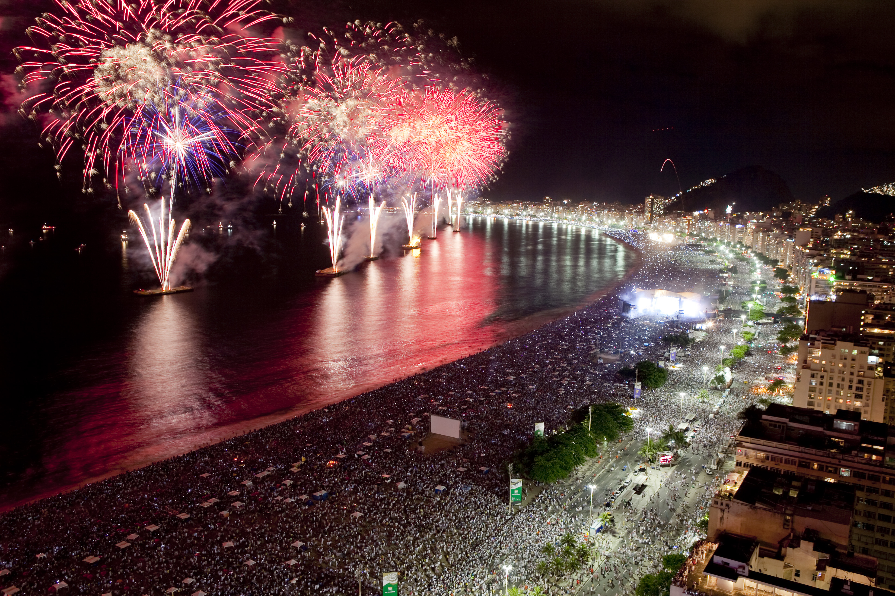
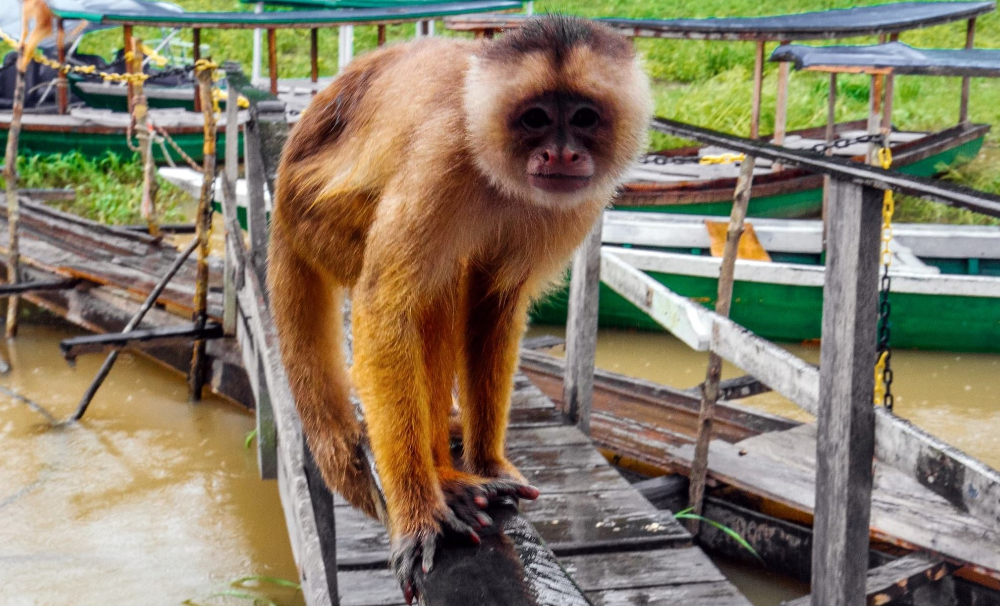
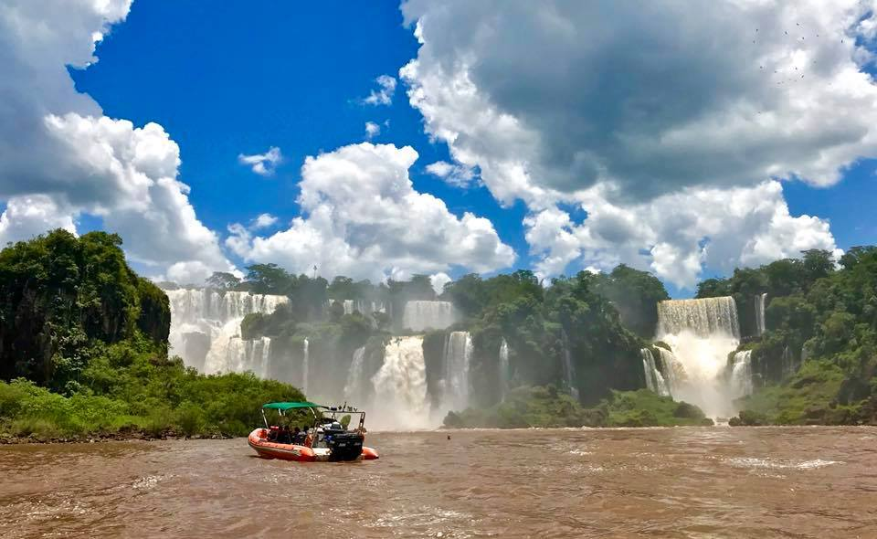
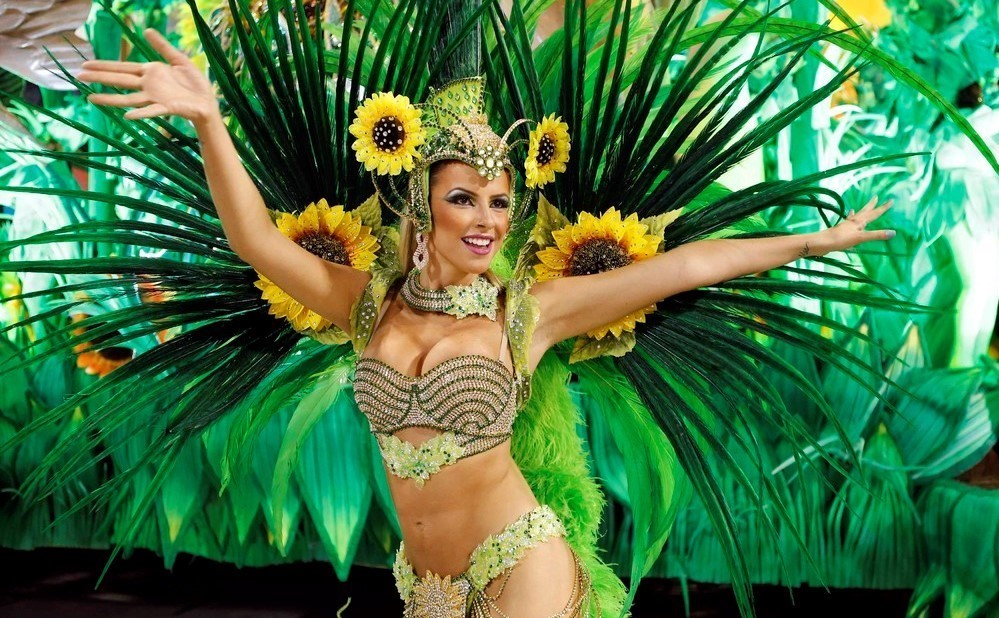

{kind=link}
{kind=link}
{kind=link}
{kind=link}
Длительность: 8 дней
Стоимость: от 2790 евро
Человек в группе: 20
Что включено:
- проживание в отелях 3-4*
- экскурсии с русско- или англоговорящим гидами по маршруту;
- все трансферы по маршруту;
- внутренние перелеты: Рио-де-Жанейро - Манаус, Игуасу - Рио-де-Жанейро;
- завтраки в отелях и полный пансион в Амазонии;
- сопровождение во время путешевствия тимлидера ONE LIFE;
- Вход в национаональный парк Игуасу с Бразильской стороны.
Дополнительно:
- международный авиаперелет (от 1400 евро);
- Медицинская страховка;
- Еда и напитки;
- Личные расходы.
Программа путешествия
А как насчет Нового года в самой красочной стране?
День 1
Прилетаем в Рио! Мы прилетаем в тот же день в Рио из-за разницы во времени. По прилету нас ожидает встреча с гидом и трансфер в отель, находящийся на знаменитом пляже Копакабана. Приветственный ужин в уютном рыбном ресторане Peixe Vivo в шаговой доступности от отеля. У нас будет возможность насладиться невероятными океанскими пейзажами перед началом знакомства с бразильской кухней. Мы убеждены, гастрономия - один из самых интересных и глубоких методов познания страны. Поэтому готовьтесь к новым вкусам, никакой резиновой еды, фастфуда и прочей гадости. Рио-де-Жанейро занимает второе после Сан-Паулу место по величине в Бразилии. Он славится своими легендарными пляжами, известными на весь мир. Самые популярные, вы конечно же, слышали - Копакабана, Леблон, Ипанема со своей знаменитой черно-белой кафельной набережной.
{kind=link}
День 2
Большой экскурсионный день по южной зоне Рио начнется со знакомства с районами Леме, Ботафого, Урка и Фламенго, по роскошному парку которого мы доедем до исторического центра Рио. В портовой зоне, пережившей кардинальную реформу в ходе подготовки города к Олимпиаде 2016, мы увидим футуристический Музей завтрашнего дня и попавшее в Книгу рекордов Гиннесса графити Etnias известного мастера стрит-арта Эдуардо Кобра. Мы посетим фабрику карнавала одной из школ самбы, узнаем как осуществляется техническая подготовка к великому празднику, почувствуем себя звездами бразильского карнавала, одевшись в настоящие карнавальные костюмы и научившись несложным па у пассистов школы самбы. В продолжении экскурсии поедем по 13-километровому автомобильному мосту на противоположный от Рио берег залива, где посетим большой рыбный рынок. Обед предусмотрен в уютном рыбном ресторане, а далее освежающая морская прогулка в заливе на паруснике (высадка в яхт-клубе Рио на Урке). Здесь, на Урке, находится одна из самых известных достопримечательностей - Сахарная голова, куда мы поднимемся по канатной дороге, чтобы увидеть закат солнца и вечерний Рио.
{kind=link}
День 3
Поскольку на встречу Нового года в Рио собирается огромное множество туристов, посещение в этот день достопримечательностей может превратиться в многочасовое стояние в очередях. Мы планируем посещение двух локаций (за дополнительную оплату без очередей $50) - Ботанический сад и фавелы Санта-Марта (с 8 до 13 ч), а далее времяпровождение на пляже. В гостинице для нас готовится праздничный ужин, а встречать Новый год мы будем с просекко и закусками на пляже Копакабана* - одно из самых известных и массовых мероприятий такого рода В МИРЕ!
{kind=link}
День 4-5
После завтрака и чек-аута мы вылетаем в Манаус - столицу штата Амазонас. По прилету встреча с местным гидом и трансфер в наш эко-лодж, где мы будем жить 4 дня в соединении с природой Амазонии. Посещение индейской деревни, индейские ритуалы, ночные сафари и ужин. После раннего завтрака мы отправимся на хайкинг по амазонским джунглям. После обеда плавание с розовыми дельфинами, затем рыбалка на пираний. Понаблюдаем закат на реке, а затем пикник на пляже.
{kind=link}
День 6-7
Посещение места слияния реки Амазонки с ее притоком Рио-Негру, далее на моторных каноэ мы отправимся посмотреть плавучие дома местных жителей. После завтрака у нас вылет в Игуасу, где на границе Бразилии с Аргентиной находятся одни из самых величественных в мире водопадов Игуасу. Мы посетим один из крупнейших птичьих зоопарков мира, а затем выполним пешеходный маршрут для обзора 275-ти водопадов. Совершим экологическую поездку на внедорожниках, а далее захватывающее приключение, когда на моторной лодке нас подвезут под один из водопадов для купания! Завершится день у стариного обелиска цветомузыкальным шоу, под открытым небом. И далее ужин в традиционном бразильском ресторане мясного родизио, которое будет сопровождаться фольклорным шоу Аргентины, Бразилии и Парагвая.
{kind=link}
День 8
В этот день мы возвращаемся в Рио-де-Жанейро, где будем отдыхать после длительного перелета на пляже Копакабана. После раннего завтрака мы посетим символ Рио - монумент Христа-Искупителя, панорамные видовые площадки на весь город. Далее сити-тур в историческом центре Рио, где мы сможем приобрести незабываемые сувениры на память. Посетим лестницу Селарона, Самбодром - где проходит карнавал и традиционный бразильский мясной ресторан. Свободное время для пляжа и подготовка к отъезду. Время возвращаться домой, до новых встречь, Бразилия!
{kind=link}
Цена: 2790.00 eur